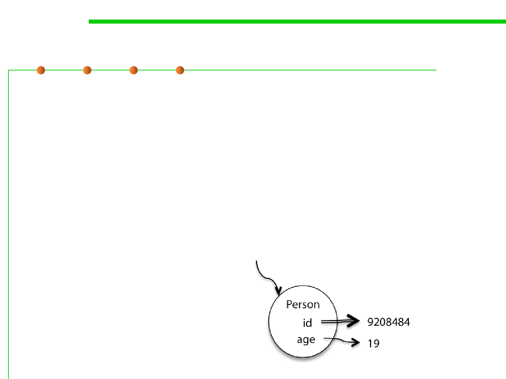

Immutable references
3.1 Data Type and Type Checking
▪ Java also gives us immutable references: variables that are
assigned once and never reassigned. To make a reference
immutable, declare it with the keyword final:
final int n = 5;
▪ If the Java compiler isn’t convinced that your final variable will
only be assigned once at runtime, then it will produce a compiler
error. So final gives a static checking for immutable references.
▪ In a snapshot diagram, an immutable reference (final) is denoted
by a double arrow.